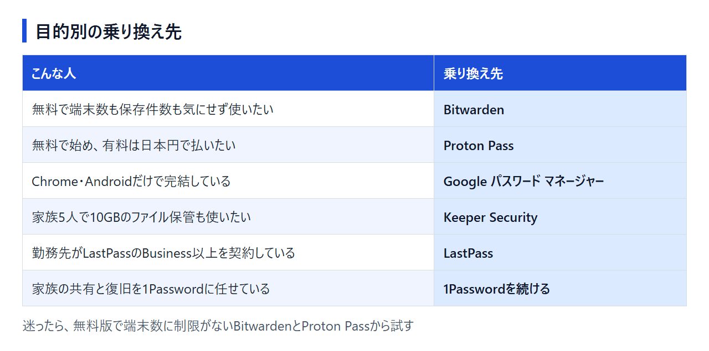
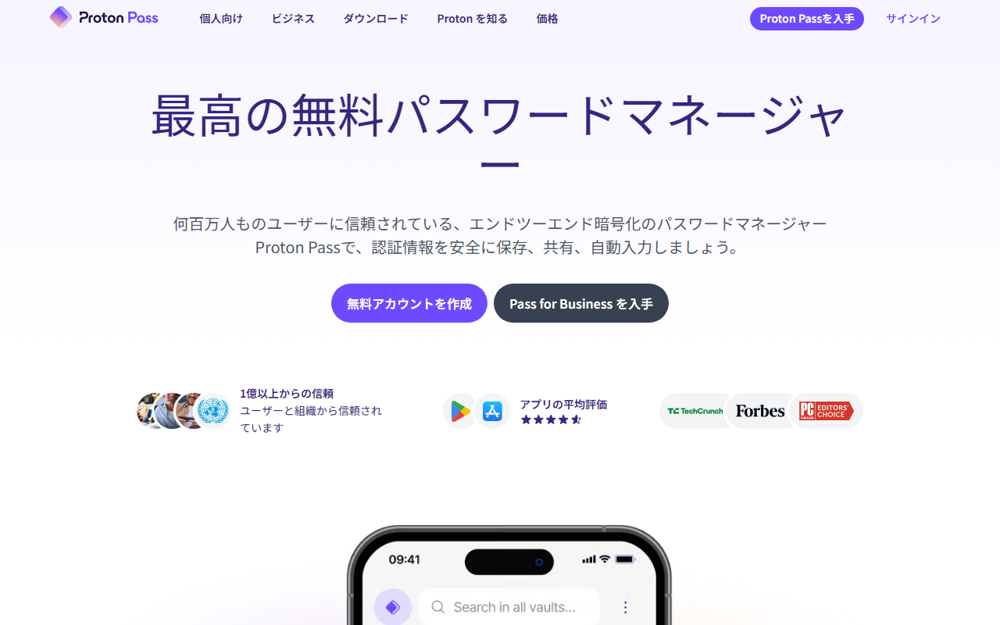
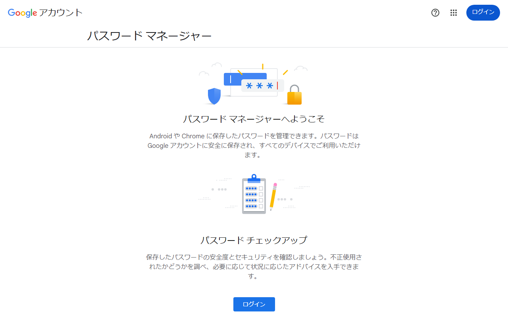
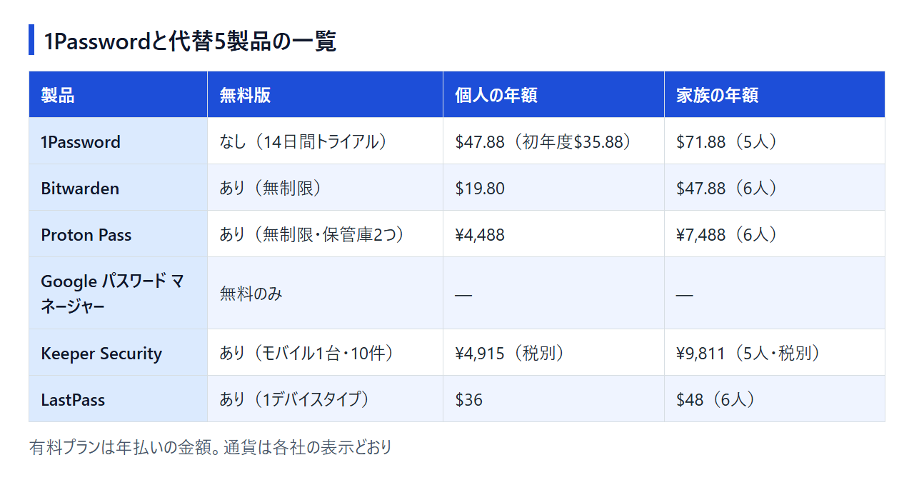
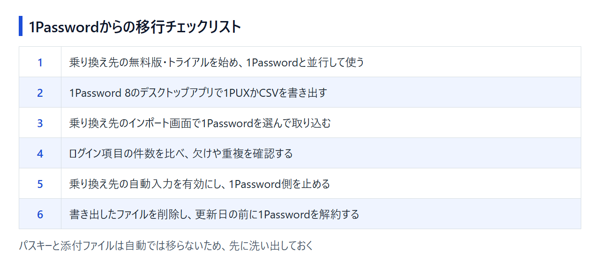

1Passwordの代替5選｜乗り換え先の選び方とデータ移行の手順
1Passwordは、ログイン情報やパスキーを端末間で同期できるパスワード管理ツールです。この記事では、代替候補の無料枠・料金・日本語対応・データ移行を比べます。
1Passwordの代替5選を料金・無料枠で早見
- Bitwarden：無料／Premiumは年$19.80
- Proton Pass：無料／Plusは年¥4,488
- Google パスワード マネージャー：無料
- Keeper Security：無料10件／個人は年¥4,915
- LastPass：無料1端末種別／Premiumは年$36
迷ったらKeeper Securityがおすすめです。画面を日本語に切り替えられ、個人向けは年¥4,915（税別）。家族向けには5人分のアカウントと10GBのファイル保管容量が付きます。
日本円で表示された個人・家族プランと、30日間の無料トライアルを確認できます。
1Passwordを続けたほうがいい人

公式サイトは日本語表示で、画面上部に「価格設定」と「無料で開始」があります。
家族の復旧と支払い方法を重視する場合
1Password Familiesは最大5人を招待でき、家族がパスワードを忘れてもFamily Organizerが復旧を手伝えます。この機能を使っている家庭は、別製品で復旧方法を決め直す手間と年額差を比べてから乗り換えを決めましょう。
勤務先の1Password Business契約にFamiliesの無料利用資格が付く場合や、JCBで払いたい場合も、続ける理由があります。円建てで前払いするなら、ソースネクスト版の3年版へ切り替える方法があります。
現在のプランと料金、14日間の無料トライアルの条件を日本語で確認できます。
乗り換えの前に：7→8移行・ソースネクスト版・iPhone移行は「代替」とは別の話
バージョンアップ、ライセンスの切り替え、機種変更の3つは、代替ツールを選ばなくても1Passwordの中で済みます。 他社への乗り換えを考える前に、目的がこの3つのどれかに当てはまるか見てください。
1Password 7から8への移行は「アップグレード」
7と8は別製品ではなく、1Passwordの新旧バージョンです。大きく異なるのはデータの持ち方。8では1Passwordアカウント（メンバーシップ）が必須で、端末内に置くスタンドアロン保管庫を使えるのは7までです。
- 1Passwordアカウントで使っている人：1Password 8をインストールすれば、既存のアカウントがそのまま表示される
- スタンドアロン保管庫で使っている人：先に1Password 7で保管庫をアカウントへ移す。WindowsではFile > Open vault on this PCで保管庫を開き、Help > Tools > Migrate standalone vaults to accountを選ぶ。Macでは設定のアカウントで既存のアカウントを追加し、データを移動する
どちらの場合も、他社向けのエクスポートは要りません。
ソースネクスト版と公式サブスクリプションの違い
国内ではソースネクストが正規代理店として1Passwordを販売しています。製品は同じですが、契約の形が異なります。
- ソースネクスト版：3年版（1人用）¥17,980、3年版（5人用）¥27,980。3年分を前払いする。自動更新はなく、期間が終われば買い直す
- 公式サブスクリプション：月払いか年払いのUSD建て（App Storeのアプリ内課金は円建て）で、自動更新が標準で有効
公式の年払い・月払いから切り替えるときは、ソースネクスト版のコードを既存の1Passwordアカウントにリンクします。次に、1Password Billing Supportから届くメールの手順に沿ってください。古い契約の残り期間は引き継がれないため、切り替えるなら更新日の直前。以前の買い切り版のライセンスはリンクできず、新しいアカウントを作ってデータを移す必要があります。
iPhoneの買い替えはアカウントの同期で引き継げる
データは端末ではなく1Passwordアカウントに紐づきます。新しいiPhoneで同じアカウントにサインインすれば、保管庫は同期されます。サインインにはAccount PasswordとSecret Keyが必要なので、事前にEmergency Kitの用意を。
代替を選ぶ前に決めておきたい4つのこと
乗り換え先は「無料でどこまで使うか」「誰と共有するか」「どの端末で使うか」「日本語と支払い方法」の4点で絞れます。 1Passwordへの不満がどれに当てはまるか考えると、候補を2つ程度まで絞れます。

無料でどこまで使いたいか（端末数・保存件数の制限）
「無料版あり」でも条件は製品ごとに違います。スマホとPCを同期できるか、保存件数が上限内かを見てください。期限なく使える無料版か、期間限定のトライアルか。この違いも見ておきましょう。
- Bitwarden・Proton Pass：常設の無料版で、端末数と保存件数に制限がない。Proton Passの保管庫は2つまで
- Google パスワード マネージャー：無料で、Googleアカウントに最大10,000件まで保存できる
- LastPass：無料版はPCかモバイルのどちらか1種類の端末だけ
- Keeper Security：30日間のトライアル後は、モバイル1台・10件までの無料版に切り替わる
1Passwordで保管庫を3つ以上に分けている人は、Proton Passの無料版では足りません。2段階認証のコードも1Passwordに入れている人は注意が必要です。内蔵の2FAと3つ目以降の保管庫は、Pass Plusから使えます。
家族やチームと共有するか
家族プランの人数は、1PasswordとKeeperが5人、Bitwarden・Proton Pass・LastPassが6人です。
- 共有の相手は家族か、仕事のチームか
- マスターパスワードを忘れた家族を、誰が復旧するか
復旧の仕組みは製品ごとに違います。
- 1Password：Family Organizerが家族のアカウント復旧を手伝える
- Bitwarden：有料プランのEmergency Accessを、信頼できる相手にあらかじめ設定しておく
- Proton Pass：Pass Plusの緊急アクセスを使う
- Keeper Security：本人が24語のリカバリーフレーズで復旧する。管理者が家族を復旧する仕組みは公式資料に見当たらない
使う端末とブラウザ（Chrome以外も使うか）
ChromeとAndroidだけならGoogle パスワード マネージャーで足りる場合があります。OSが混在する場合やChrome以外のブラウザも使う場合は、専用アプリとブラウザ拡張がそろった製品が向いています。
日本語の画面と、日本から使える支払い方法
多くの製品は、画面が日本語でも料金はドル建てです。日本円表示の料金ページがあるのはProton PassとKeeper Security。1Passwordも、ソースネクスト版かApp Storeのアプリ内課金なら円で払えます。JCBやPayPalの利用可否も、候補を絞る条件です。
1Passwordの代替5選
5製品で違いが大きいのは、無料版の範囲と、家族・チーム向けプランの人数や料金体系です。 5製品とも1Passwordから書き出したデータを取り込めますが、読み込める形式は製品ごとに違います。
Bitwarden：無料版でも端末数と保存件数に制限がない

公式サイトは日本語表示で、「無料で始める」ボタンが画面上部と中央にあります。
1Passwordに無料プランがないことを不満に感じる人には、Bitwardenが合います。Freeに期限はなく、保存件数も端末数も無制限です。
- Premium：年$19.80（月あたり約$1.65）
- Families：$3.99/月の年払いで6ユーザーまで
オープンソースで、第三者の監査も受けています。有料プランの返金条件は、契約から30日以内にサポートへ連絡すること。1Passwordからは.1pux・.1pif・.csvのどれでも取り込めます。支払いにはPayPalを使えますが、JCBは公式の一覧にありません。
Freeと有料プランの機能差を日本語で確認できるページです。有料プランでは、万一のときに信頼できる相手へ保管庫の利用を認めるEmergency Accessを設定できます。
Proton Pass：無料版で端末数無制限、料金は日本円で表示される

公式サイトは日本語表示で、「無料アカウントを作成」ボタンが表示されています。
Proton Passは無料のProton Freeでもログイン件数と端末数が無制限で、カード登録なしで始められます。
- Pass Plus：¥374/月相当（12か月¥4,488）
- Pass Family：¥624/月相当（12か月¥7,488）、最大6ユーザー
無料版にも、メールアドレスを隠すhide-my-emailのエイリアスが10件付きます。Freeで作れる保管庫は2つまでですが、Pass Plusでは上限が50に増えます。Pass Plusで新たに使えるのは、内蔵の2FAと緊急アクセス。支払いはカード・PayPal・Apple Pay・Google Payに対応しています。公式直販のPass Plusは30日返金保証の対象。1Passwordのデータは、ブラウザ拡張の設定から1PUXか1PIFで読み込みます。
無料版と有料プランの機能差を日本円の価格と一緒に見られるページです。Proton Mailなど同じ会社の別製品と取り違えないよう、Passのプランを選んでください。
Google パスワード マネージャー：ChromeとAndroid中心なら追加費用なし

日本語画面には、「パスワード チェックアップ」とログインボタンが表示されています。
GoogleアカウントとChromeの標準機能で、専用の有料プランはありません。保存したパスワードは複数端末に同期され、パスキーも管理できます。漏洩や使い回しは、パスワードチェックの対象。CSVのインポート上限は1回3,000件、保存上限は10,000件です。ファミリーグループのメンバーと共有できるのは、パスワード1件ずつ。共有用の保管庫やチームの管理機能はないため、共有も1Passwordに任せていた人には使える機能が減ります。
Googleアカウントでログインすると、このページに保存済みのパスワードとチェック結果が表示されます。Chromeにパスワードを保存している人なら、何も追加せずに1Passwordとの比較を始められます。
Keeper Security：日本円の料金表示と日本向け電話番号がある

公式サイトは日本語表示で、画面上部から料金ページと「無料で試す」へ進めます。
Keeper Securityの公式日本語ページでは、料金が日本円（税別）で表示されます。個人向けもファミリー向けも、1年分を一括で支払う契約です。
- 個人：¥410/月（1年分¥4,915）
- ファミリー：¥818/月（1年分¥9,811）、5ユーザー・10GBのファイルストレージ付き
ファミリープランでは、パスワードと家族で共有する書類を同じ場所に保管できます。勤務先がKeeperのビジネスやエンタープライズを契約していれば、ファミリープランの追加料金はかかりません。
日本語サイトにはAPAC・日本向けの電話番号も載っています。ただし、日本語で対応するかは明記されていません。アプリは日本語表示にも対応。
個人向けは30日間試せます。トライアル終了後は、モバイル1台・保存10件までのKeeper Freeに切り替わり、同期は使えません。1Passwordとの並行利用は、トライアル期間内に終えるのが目安。返金は原則として受け付けていません。1Passwordのデータは、Web Vaultかデスクトップアプリの設定から1PUXまたはCSVで取り込めます。
個人・ファミリー・法人向けの円建て料金と、無料トライアルの申し込み窓口がまとまっています。表示は税別価格です。
LastPass：PCかスマホのどちらかだけなら無料版で使える

撮影時の公式サイトは英語表示で、右上に「Get LastPass free」があります。
無料版で使える端末は、PCかモバイルのどちらか1種類に限られます。保存件数は無制限で、自動入力やダークウェブモニタリングも含まれます。
- Premium：$3.00/月（年払い）
- Families：$4.00/月（年払い）、Premiumアカウント6人分
無料版で使える範囲は、BitwardenやProton Passのほうが広めです。Familiesの定員はBitwardenと同じ6人。LastPassは$4.00/月で、Bitwardenの$3.99/月をわずかに上回ります。候補に残るのは、勤務先がBusiness以上を契約し、従業員向けのFamilies for employeesを使える場合です。
有料プランはすべて年払いで、価格はUSD建て・税別です。PremiumとFamiliesは、カード登録なしで30日間試せます。日本語に対応しているのはアプリだけ。公式サイトには日本語ページがありません。
自己都合の返金は原則対象外。1PasswordからはCSVで取り込めます。ただし、添付ファイルは移らず、一度に200件以上を取り込むと失敗する場合があります。
英語のサイトですが、無料版のデバイス制限と各プランの年払い価格を並べて見られます。PCとスマホの両方で使うなら、無料版では足りません。
1Passwordと代替5製品を料金・無料版・日本語対応で比べる
料金だけで見れば、Google パスワード マネージャーなら追加費用は不要。BitwardenとProton Passも、無料版なら端末数は無制限です。 一方、JCBで払える点や、家族の復旧をFamily Organizerに任せられる点では、1Passwordにも強みが残ります。

料金と無料版の範囲
- 1Password：常設の無料版なし（14日間トライアル）。Individualは年払いで$2.99/月（新規初年度のプロモ価格。通常は$3.99/月）
- Bitwarden：Freeは無制限、Premiumは年$19.80
- Proton Pass：Freeは無制限（保管庫は2つまで）、Pass Plusは年¥4,488
- Google パスワード マネージャー：無料のみ
- Keeper Security：Freeはモバイル1台・10件、個人は年¥4,915（税別）
- LastPass：Freeは1デバイスタイプ、Premiumは$3.00/月（年払い）
有料で使う場合の年額を、1ドル=157円で換算しました（執筆時点の目安。為替で変動）。まずは個人向けです。
- 1Password Individual：$47.88（約7,517円。初年度はプロモ価格の$35.88で約5,633円）
- Bitwarden Premium：$19.80（約3,109円）
- Proton Pass Plus：¥4,488
- Keeper Security 個人：¥4,915（税別）
- LastPass Premium：$36（約5,652円）
家族向けは次のとおりです。
- 1Password Families（5人）：$71.88（約11,285円）
- Bitwarden Families（6人）：$47.88（約7,517円）
- Proton Pass Family（6人）：¥7,488
- Keeper Security ファミリー（5人）：¥9,811（税別）
- LastPass Families（6人）：$48（約7,536円）
1Passwordを続ける場合、ソースネクスト3年版の1人用は¥17,980で、1年あたり約5,993円です。5人用は¥27,980で、1年あたり約9,327円になります。
日本語の画面とサポート
- 1Password：画面はサイト・アプリとも日本語。サポートは日本語の問い合わせフォームがある
- Bitwarden：画面はサイトが日本語表示（一部は英語のまま）。サポートは日本語のヘルプセンターがある
- Proton Pass：画面は日本語の公式サイトがある。サポートは日本語のヘルプがある
- Google パスワード マネージャー：画面は日本語。サポートはGoogleの日本語ヘルプがある
- Keeper Security：画面はアプリを日本語に切り替えられる。サポートは日本向けの電話番号があるが、対応言語は明記されていない
- LastPass：画面は公式サイトに日本語ページがなく、アプリは日本語に対応。サポートの日本語対応は記載がない
日本から使える支払い方法と請求書
- 1Password：JCBを含む主要カードに対応し、PayPalの直接払いは不可。請求書はPDFで届く
- Bitwarden：主要カードとPayPalに対応し、JCBは公式一覧にない。請求書・領収書はPDFで取得できる
- Proton Pass：カード・PayPal・Apple Pay・Google Payに対応し、請求書PDFを取得できる。JCBの明記はない
- Keeper Security：クレジット・デビット・チャージカードを受け付けるが、ブランドの明記はない
- LastPass：主要なクレジット・デビットカードに対応。JCBやPayPalの明記はない
海外サービスの消費税やインボイスの扱いは契約形態で変わるため、経費にする場合は税理士に確認してください。
Google パスワード マネージャーと1Passwordの違い
違いは費用と共有・復旧の仕組みです。
- 費用：Googleは追加費用なし。1Passwordは有料で、14日間のトライアルがある
- 保存先：GoogleはGoogleアカウントか端末。1Passwordは個人用・共有用の保管庫に分けられる
- 共有と復旧：1Password Familiesは最大5人を招待できる。Family Organizerは家族の復旧を手伝える。Googleはファミリーグループのメンバーと1件ずつ共有できるが、共有保管庫や家族の復旧機能はない
ChromeとAndroidで完結し、ひとりで管理するならGoogleで十分です。家族と共有したい人や、仕事用と個人用で保管庫を分けたい人は、1Passwordを続けるかBitwarden・Proton Passを選びましょう。
1Passwordから代替へデータを移す手順
移行は「1Passwordからエクスポート → 乗り換え先へインポート → 件数と中身を確認 → 書き出したファイルを削除」の順で進めます。 パスキーや添付ファイルなど、自動では移らないデータも先に把握しておきます。逆方向の移行はこの章の最後にまとめました。

どの乗り換え先にも共通する移行の流れ
- 乗り換え先の無料版やトライアルを始め、1Passwordと並行して使う（Keeperは30日間のトライアル中に済ませる）
- 1Password 8のデスクトップアプリでデータを書き出す。MacではFile > Exportを開く。Windowsではサイドバー上部の「…」> Exportを開く。アカウントパスワードを入力し、1PUXかCSVを選ぶ
- 乗り換え先のインポート画面で1Passwordを移行元に選び、取り込む
- 元と先でログイン項目の件数を比べ、欠けや重複を確認する
- 乗り換え先の自動入力を有効にしてから、1Passwordの自動入力を止める
- 書き出したファイルを削除し、更新日の前に1Passwordを解約する
1PUXにはカスタムフィールドなども含まれますが、CSVに入るのはログインとパスワードの項目だけです。乗り換え先が1PUXに対応しているなら、1PUXを選びます。
1PUXもCSVも暗号化されておらず、開けば全パスワードが読めます。ダウンロードフォルダーやクラウドストレージの同期フォルダーに残ったファイルも消し、ゴミ箱を空にしてください。
1PasswordからBitwardenへ移す
- Bitwardenのインポート画面で、.1pux・.1pif・.csvのうち書き出した形式を選ぶ
- 家族や組織と共有する項目と、個人保管庫に置く項目を分ける
- 添付ファイルは個別にアップロードし直す
一部のアイテム種別は取り込みの対象外です。取り込まれた件数を、元の1Passwordにある件数と種類ごとに比べます。
1PasswordからGoogle パスワード マネージャーへ移す
- 1PasswordからCSVで書き出す
- Chromeのメニューから「パスワードと自動入力」>「Google パスワード マネージャー」>「設定」に進み、「パスワードをインポート」でCSVを選ぶ
- 件数が多ければ1回3,000件までに分け、保存上限の10,000件に収まるかも確かめる
うまく取り込めない場合は、CSVの1行目の列名を url・username・password に合わせてから読み込み直します。取り込み後に実行するのはパスワードチェック。漏洩や使い回しの警告が出たパスワードをまとめて洗い出せます。
自動では移らないデータ（パスキー・添付ファイル・共有保管庫）
移るのは主にログイン情報です。次のデータは移行後に一つずつ確認します。
- パスキー：デスクトップアプリで書き出す1PUX・CSVには含まれない。iOS・Android版から対応アプリへ直接転送できる。転送できない場合は各サイトで作り直す
- メモやカード情報：CSVで書き出すと移らない
- 添付ファイル：Bitwardenへは個別にアップロードし直す。LastPassは添付ファイルの取り込みに対応していない
- 共有保管庫：チームの保管庫は「Export items」の権限がないと書き出せない場合がある。家族やチームと共有している項目が、書き出したファイルに入っているか確かめる
- ワンタイムパスワード（2FA）：移行先で認証コードが表示されるか、主要なサイトで試す。Proton Passで内蔵の2FAを使うにはPass Plusが必要
逆方向：BitwardenやGoogleから1Passwordへ移す場合
Bitwardenから1Passwordへ移すときは、Bitwardenの暗号化JSONを使い、1Passwordの公式案内に沿って進めます。取り込みの対象外は、共有コレクション内の項目とパスキー。暗号化JSONには添付ファイルも含まれないため、これらは別途移します。
Google パスワード マネージャーでは、設定の「パスワードをエクスポート」からCSVをダウンロードします。デスクトップアプリでは、File > ImportからChromeを選択。1Password.comを使う場合は、アカウントメニューの「Import data」から取り込んでください。移るのはパスワードだけで、クレジットカード・住所・パスキーは対象外です。
1Passwordを解約するタイミングと注意点
1Passwordは解約しても請求期間の終わりまで使えます。期間終了後にアカウントが凍結されても、データの閲覧やエクスポートは可能。 返金は原則ないため、更新日の前までに移行と解約を済ませましょう。
- 手順：1Password.comにサインインし、サイドバーのBilling → Cancel subscriptionへ進む
- App Store経由の契約：Appleのサブスクリプション管理で解約する
- 無料トライアル中：期間内に解約すれば課金されない
- ソースネクスト3年版：自動更新がないため、期間が終われば契約も終わる
まとめ：まずは無料版かトライアルで並行運用してみる
乗り換え先を目的に合わせて決めたら、無料版やトライアルで1Passwordと並行して使います。解約するのは、その後です。
迷ったときは、次の順に考えると候補が絞れます。
- 無料で足りるか：足りるならBitwarden。ChromeとAndroidだけならGoogle パスワード マネージャー
- 家族と共有し、復旧まで任せたいか：1Passwordを続けるか、有料プランで緊急アクセスを設定できるBitwarden・Proton Pass
- 支払いの条件はあるか：JCBなら1Password、公式サイトの円建て料金ならProton PassかKeeper Security
候補を1つ選んだら、1Passwordのデータを残したまま取り込み、1〜2週間ほど両方を使ってください。自動入力が正常に動き、取り込んだ件数も合っていれば、更新日の前に解約します。
BitwardenのFreeには期限も端末数の制限もありません。並行利用に使ったアカウントを、そのまま使い続けられます。
無料版から始められるProton Passは、有料に切り替えるかどうかを日本円の年額で判断できます。